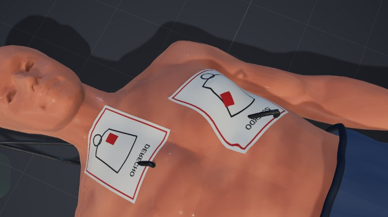
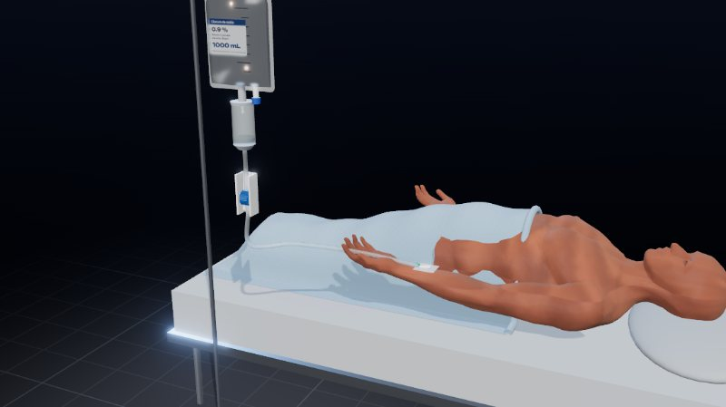
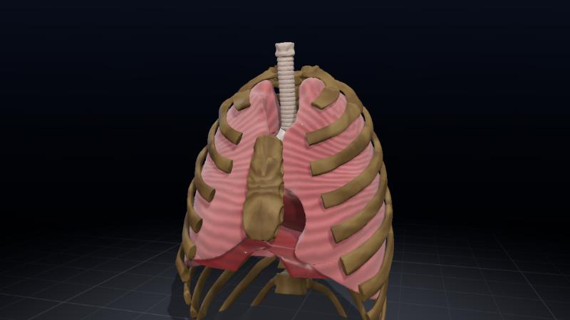
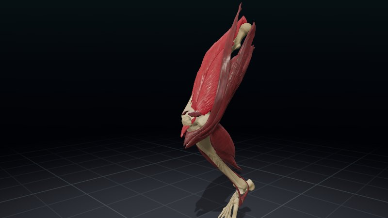
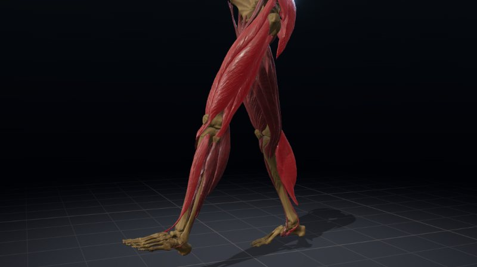
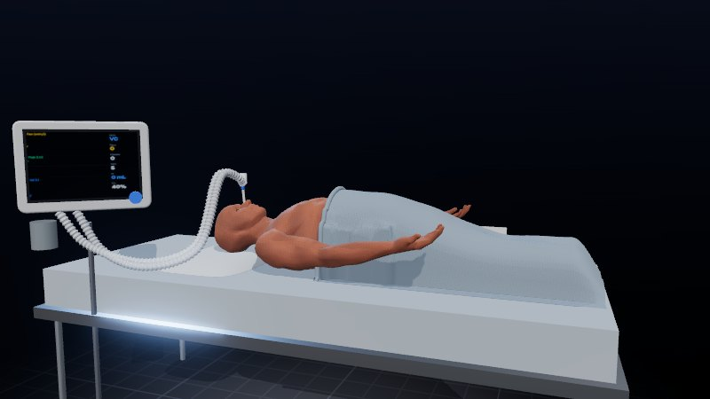

Demos
El cuerpo humano, los equipos médicos y la práctica clínica, abiertos para explorar. Modelos anatómicos reales, cada demo corre en tu navegador y se abre a pantalla completa.
LECCIONESSimuladores y lecciones están en Herramientas Enfermería
EnfermeríaTomar la presión arterial
Un brazo real y un esfigmomanómetro aneroide: infla el brazalete, escucha los ruidos de Korotkoff y descubre cómo mide un monitor automático.
Abrir demo →
MedicinaEl desfibrilador (DEA)
Un DEA sobre un paciente reconstruido con piel, costillas y corazón reales: parches, análisis del ritmo, descarga y RCP de alta calidad.
Abrir demo → Ingeniería biomédica
Ingeniería biomédicaEl ECG de 12 derivaciones
Coloca los 10 electrodos sobre un tórax real y mira cómo el vector eléctrico del corazón se ve distinto desde cada derivación.
Abrir demo → Medicina
MedicinaEl corazón eléctrico
Un corazón humano real, reconstruido de imágenes médicas. Sigue el impulso del nodo sinusal a las fibras de Purkinje, sincronizado con un ECG.
Abrir demo → Ingeniería biomédica
Ingeniería biomédicaLa luz que mide el oxígeno
Un pulsioxímetro abierto en 3D: luz roja e infrarroja atraviesan el dedo y el aparato calcula la saturación. Incluye quiz.
Abrir demo →
EnfermeríaGota a gota
Un equipo de venoclisis: gira la pinza, cuenta gotas 15 segundos y resuelve indicaciones de mL/h y gotas por minuto.
Abrir demo →
MedicinaCómo respiras
Pulmones, costillas y diafragma reales. Inhala, mira la presión y la distensibilidad, entra a los alvéolos y prueba un ventilador.
Abrir demo →
FisioterapiaLa rodilla como palanca
Huesos y cuádriceps reales en una sentadilla: mira cómo crecen las fuerzas en la rótula con cada grado de flexión.
Abrir demo → Medicina
MedicinaVálvulas y ruidos del corazón
Válvulas reales que abren y cierran con cada latido, ruidos S1 y S2, focos de auscultación sobre piel real y soplos.
Abrir demo →
FisioterapiaMarcha paso a paso
Una pierna real camina: las ocho fases de la marcha, ángulos de cadera, rodilla y tobillo y los músculos que trabajan.
Abrir demo →
Ingeniería biomédicaDentro del ventilador
Pulmones reales intubados y un ventilador con curvas de presión, flujo y volumen: modos, PEEP, presión meseta y alarmas.
Abrir demo →
Referencias
Cada demo se apoya en guías clínicas, artículos clásicos y revisiones. Todas las referencias están verificadas en PubMed, con su DOI.